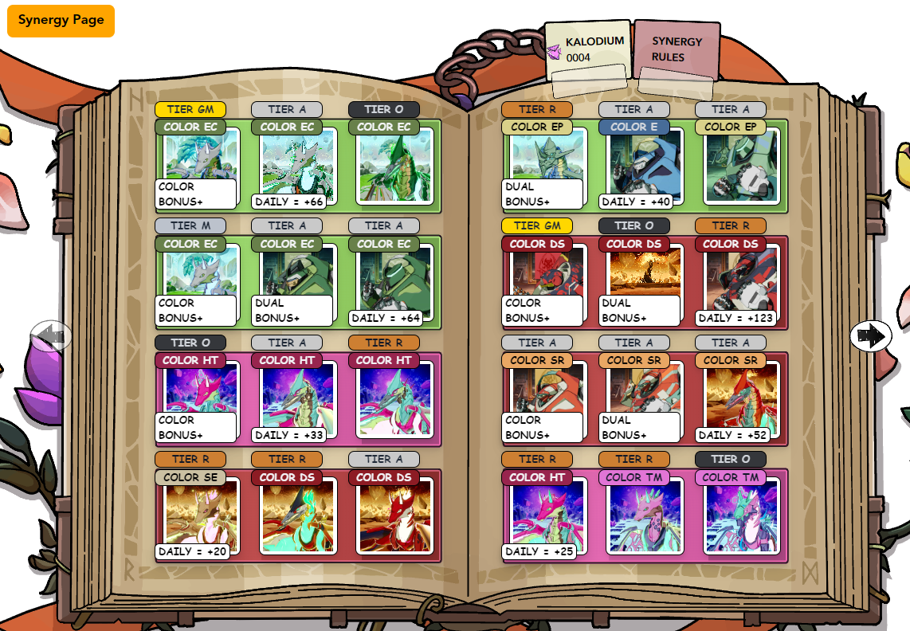

How does the web3 game work?

I would describe the web3 game as a semi-active form of staking. Kaidro stays away from most web3 game's grind culture and simply rewards you
for holding their NFTs. Of course they do require you to "play" or set synergies once per week but that only requires minimal
effort. There is also a spin wheel that gives you a chance to win more rank points and prizes. You don't need to grind or play the steam game. This repels people who want to play the game just to milk the IP of
it's token. I also like that $KDR is heavily protected from BOTS. The quests require some effort to finish and you need
complete 14 quests before you can even participate in $KDR distribution. In addition, it all requires effort to setup.
The requirements are as follows: (1) complete 14 quests in the kaidro.com website (This is fairly easy to accomplish) (2) have at least 3 NFTs of the same clan. You will combine 3 NFTs and lock them up to produce synergy.
There are bonuses you get when you combine 3 of the same color and when you combine 2 to 3 different NFT types. Base rank points are determined by
NFT tier/rarity, the higher the tier the higher the points. NFT parts are used in another mechanic that will boost your chances at prizes in the spin wheel.
I made a synergy calculator for you to easily plan your purchases and see what points your gonna make and how much your gonna spend on fees. See the link below.
Synergy slots currently cost 1 $RON and diminishes 50% per additional slot unlocked. There is no limit to the number of
Synergy slots you can have on 1 account. We know that RON will be replaced with $KDR once it is launched.
2 things are produced when you engage in synergy (1) Rank points - that rack up towards monthly leaderboards (2) Kalodium - a non-tradeable token
used to in the spin wheel system. You get 1 Kalodium per 5-10 rank points you make (don't worry it's in the calculator).4
1 Kalodium is used per spin. Each spin will give you a chance to win different tiers of prizes, one of them being rank points.
This prevents the game from being too predictable.
Every month a snapshot will be taken and $KDR will be distributed in proportion to your accumulated rank points.